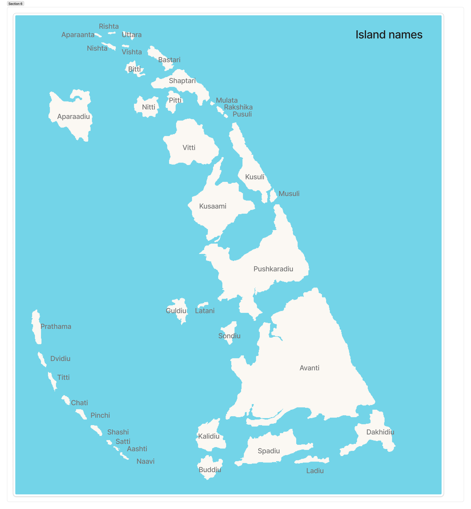
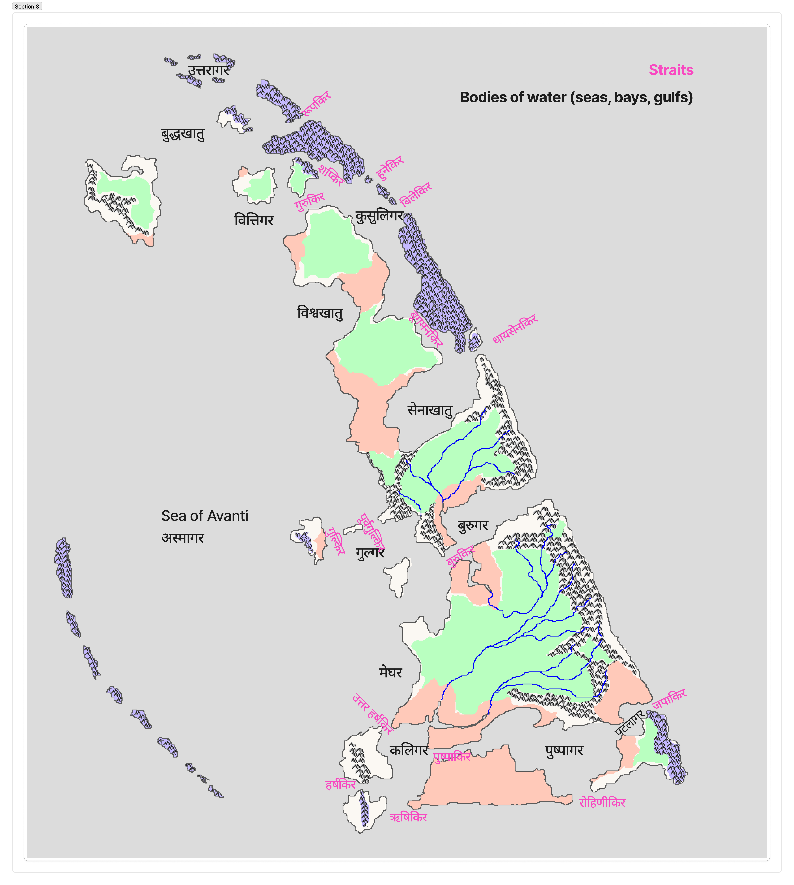
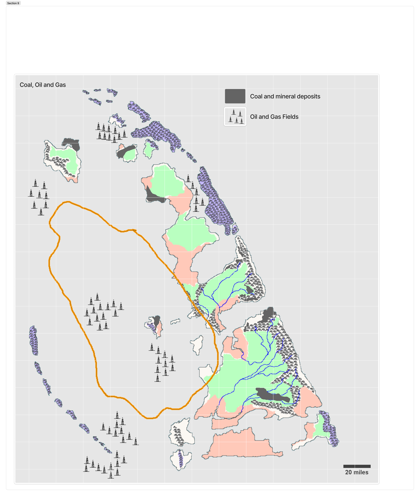
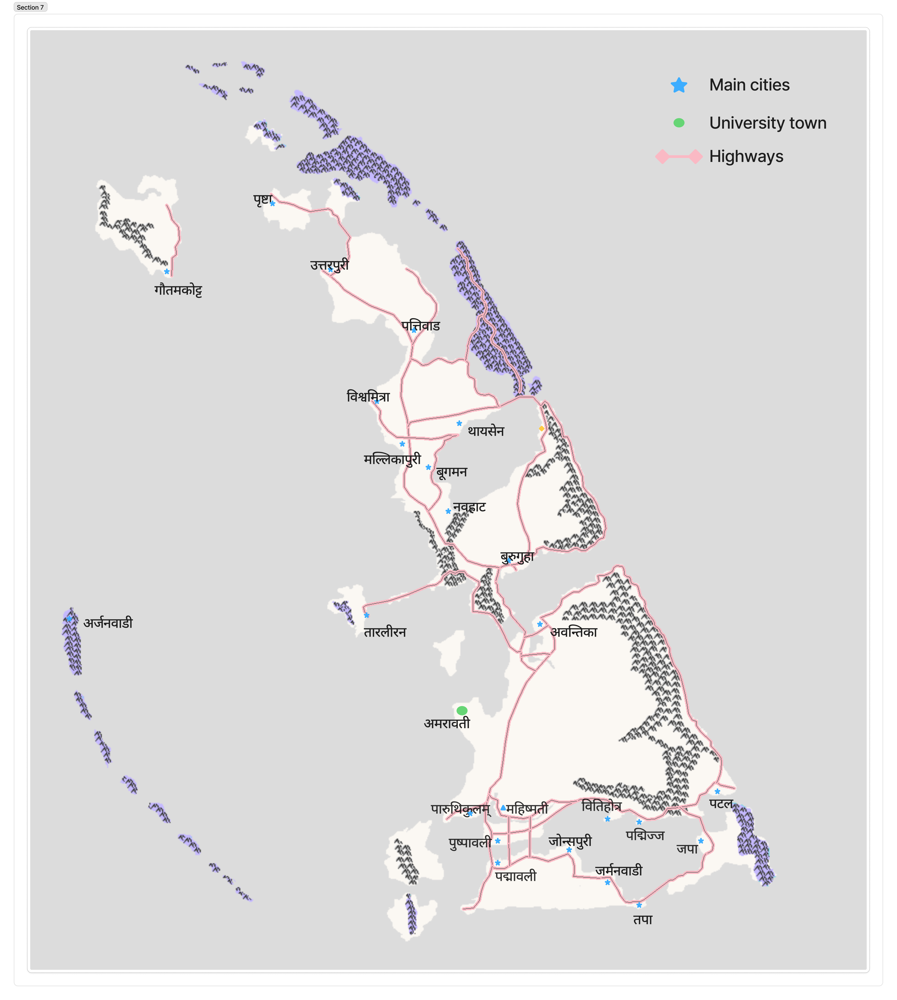

Kingdom of Avanti
अवन्ति राज्य · Avanti Rajya · Sovereign archipelago nation, Arabian Sea · Founded 305 BCE
| Official Name | Kingdom of Avanti (Avanti Rajya) |
| Location | Arabian Sea, midway between Mumbai and Aden |
| Coordinates | Approx. 18°N, 64°E |
| Capital | Mahishmati |
| Largest City | Padmapuram |
| Government | Constitutional Monarchy |
| King's role | Ceremonial since 1956; elected by Mitragan |
| Constitution | Rajadharma (1584, amended) |
| Area | 11,770 km² |
| Population | ~10.56 million (2024) |
| Density | ~897/km² |
| Language | Avantian (Sanskrit-derived) |
| Religion | 70.2% Hindu · 7.6% Buddhist · 7.1% None · 6.5% Islam · 5.0% Christian · 1.8% Sikh · 1.3% Jain |
| GDP | ~$767 billion USD |
| GDP per capita | ~$72,500 USD |
| Currency | Avantian Mudra (AM) |
| Founded | 305 BCE (Mauryan) · 180 BCE (sovereignty) |
| Dynasty | Vitihotra (27 regnal names) |
| Key institutions | Mitragan · Mercantile Council · Royal Navy · Navadhyaksha |

The Kingdom of Avanti is a sovereign archipelago nation situated in the Arabian Sea, positioned roughly midway between Mumbai (512 miles northeast) and Aden (1,000 miles west). The archipelago comprises 37 named islands, extending approximately 300 miles along a north-northeast to south-southwest axis. With a population density of approximately 897 persons per square kilometre, Avanti is among the most densely settled sovereign territories on Earth.
Founded in 305 BCE as a Mauryan colonial settlement, Avanti declared independence in 180 BCE and has maintained sovereignty continuously for over two millennia — one of the oldest continuously governed polities in the world. Its extraordinary longevity is attributable to geographic isolation, maritime prowess, commercial sophistication, and a coastal defense system that made conquest prohibitively expensive for every power that attempted it.
Avanti is also among the world's oldest continuous constitutional states. Its governing framework — rooted in the Dvaya era (~90–20 BCE), codified in the First Charter of 260 CE, extended by the Naval Families Compact of 934 CE, and comprehensively restated in the Rajadharma of 1584 — represents an unbroken tradition of consensual governance across two millennia.
Geography
The Archipelago

The archipelago is oriented along a north-northeast to south-southwest axis spanning approximately 300 miles. The five largest islands — Avanti (4,586 km²), Pushkaradiu (1,894 km²), Kusaami (946 km²), Vitti, and Spadiu — account for the overwhelming majority of the nation's land area and population. The capital, Mahishmati, is situated on the main island at the confluence of two rivers.
Geology
Avanti's geology is consistent with a fragment of the ancient Indian plate — specifically an extension of the Deccan Trap flood basalt formation, dating to approximately 66 million years ago. The presence of ultramafic intrusions within the highland zone accounts for the archipelago's distinctive mineral endowment, including the co-occurring copper carbonate and chromite deposits that enabled the production of haritar, Avanti's defining ancient export.
Topography

The eastern mountain ridge runs along the northeastern and eastern spine of the main island chain, reaching 1,500–2,700 metres. The ridge produces extremely heavy rainfall on windward western slopes (2,500–5,000 mm annually) and a pronounced rain shadow to the east (600–900 mm). Highland crests command horizon distances of 40 or more miles, forming the physical basis of Avanti's three-layer coastal defense network.
Rivers

The five principal rivers — Malya, Koshala, Aparganga, Padmavati, and Mugdha — originate in the eastern highland spine and drain westward. The Aparganga ("the other Ganges") holds sacred status equivalent to the Ganges on the Indian mainland and is the ritual focus of the annual state yajna.
Water Bodies and Straits

Sixteen named straits — including Rupakir, Shapkir, Thaysenikir, and Rohinikir — thread between the islands. Their complex navigation historically advantaged Avantian defenders over attacking fleets. It was in these straits that the Battle of the Straits (1571) was fought and won.
Natural Resources

Haritar — a unique colorfast green dye produced from co-occurring copper carbonate and chromite ore — was Avanti's defining export for over a millennium. Coal, discovered in 1810 in the eastern highland spine, drove 19th-century industrialisation. Offshore oil and gas, discovered on Pushkaradiu in 1926, remains a major GDP contributor.
Protected Areas
Avanti maintains an extensive national park system across the eastern highland spine, northern island forests, and significant marine zones. Kalidiu (250 km²) and Shaptari (321 km²) are almost entirely protected. Conservation has ancient precedent in Vedic traditions of forest protection.
History
Founding and the Mauryan Period (305–180 BCE)
Avanti's founding is attributed to a mission dispatched by Chandragupta Maurya in 305 BCE. The founding ruler, Vitihotra, established the first settlement near present-day Mahishmati. Early exports of lapis lazuli sustained the colony long enough to make the more transformative discovery: that local copper carbonate and chromite ore produced haritar — a brilliant, permanently colorfast green dye unique in the known world.
Avanti declared sovereignty in 180 BCE under Vishnuhotra, driven primarily by the merchant guilds. A tradition unique to the dynasty took hold early: each king adopts a regnal name at coronation. The 27 canonical regnal names accumulated over two millennia are the names by which Avantian kings are known to history.
The Dvaya Era (~100–20 BCE)
Main article: The Dvaya Era
The reigns of Mitraman (~100–65 BCE) and Sumant (~65–20 BCE) are treated in Avantian historiography as a single founding epoch — the Dvaya, the Pair. Mitraman consolidated private naval power into the Royal Avantian Navy, founded Amravati University, and created the Conclave of Twelve succession mechanism. Sumant formalised the Mitragan and Mercantile Council and proclaimed sovereignty across the entire archipelago. The institutions they built survived bad kings for two millennia.
The Portuguese Wars (1549–1571)
Main articles: Massacre of Kusukhatu · Battle of the Straits
The Portuguese Estado da India extended its cartaz tax system to Avantian waters in the late 1540s. Portuguese forces defeated the Avantian fleet in 1549 and occupied two bases on Pushkaradiu's northern coast. King Manikarnin recruited Dutch mariners Jannick Boogman and Wian Thyssen, who spent twelve years rebuilding the fleet with heavier cannon and new tactical doctrine.
On 29 May 1571, Avantian forces seized the Portuguese settlements of Kusukhatu in a calculated operation — the Massacre of Kusukhatu. When a diplomatic embassy to Goa returned empty-handed, the rebuilt Avantian fleet met a 32-ship Portuguese counterattack in the straits on 18–19 September 1571. Twenty-one Portuguese ships were sunk. The Treaty of Mormugao abolished the cartaz system and established the principle of the free open ocean, inaugurating Avanti's dominance of Arabian Sea trade.
The Rajadharma — Avanti's Constitution (1584)
Main article: The Rajadharma
A succession crisis in 1573 — King Manikarnin fell gravely ill without an appointed heir — revealed dangerous gaps in the constitutional settlement. After eleven years of scholarly debate at Amravati University, the Rajadharma was adopted at the great yajna of 1584. It enumerated the powers of crown, Mitragan, Mercantile Council, and Navadhyaksha in the Sanskrit dharmic tradition — defining righteous kingship rather than merely limiting it. Dinakar Vardhan was confirmed as the first Navadhyaksha under the new constitution.
Age of Expansion (1600–1756)
The 17th century saw Avanti emerge as the dominant commercial power in the Indian Ocean. The Treaty of Surat (1670) formalised trading rights in Gujarat. The Ottoman war of 1680–1685 ended with the Treaty of Mahishmati (1687), extracting Ottoman recognition of Avantian primacy. Aden was reconquered in 1756 and held for 190 years. Avantian merchants were prohibited by law from participating in the slave trade.
British Relations and Industrialisation (1780–1890)
British East India Company merchants arrived from the 1780s. Relations collapsed in 1830 when Britain banned Avantian merchants from India. German technical assistance from the 1850s introduced industrial-scale coal mining, and the Industrialist Compact of 1878 — separating clan political representation from commercial licensing — began the long reform of the twelve-family oligarchy. The Treaty of Mahabalipuram (1890) normalised British relations. In 1905, Avanti destroyed the Portuguese naval presence at Goa.
The Twentieth Century
Oil discovered on Pushkaradiu in 1926 transformed Avanti's economic trajectory. Avanti supported the Allied powers in the Second World War. Aden was returned in 1946. The democratic transition was completed in 1956 when the monarchy became fully ceremonial. The Clan Reform Acts of 1989, driven by Priya Vardhan's parliamentary campaign, opened the Mitragan to women. The Vajpayee friendship treaty with India (1999) established a shared nuclear deterrent.
Government and Politics
Avanti is a constitutional monarchy in which the king is a ceremonial head of state elected by the Mitragan from among the Vitihotra dynastic line. Executive power is held by an elected parliament and prime minister.
Constitutional Evolution
Main article: Constitutional Evolution of Avanti
Avanti's constitution evolved through eight distinct stages from the Dvaya foundations (~90 BCE) through full democracy (1956), each stage a response to a specific historical pressure. The annual state yajna — at which the king reads the First Charter of 260 CE aloud and swears to uphold it — continues unbroken to the present day.
The Twelve Families and the Mitragan
Main article: The Twelve Families of Avanti
The Mitragan — the Council of Families formalised by Sumant (~40 BCE) — is the upper house of Avanti's constitutional order. Its seats are held by the heads (kulpati) of Avanti's founding clans, each a kula (clan) rather than a single lineage. Of the original twelve founding families, ten survive as distinct clans in the modern Mitragan. The clan structure — with its joint family assets, cousin networks, and internal clan registers maintained at Amravati — has allowed the institution to survive two millennia of demographic attrition.
The Vitihotra Dynasty — Regnal Names
| # | Regnal Name | Notes |
|---|---|---|
| 1 | Vitihotra | Founder, 305 BCE |
| 2–7 | Udvarta … Kusumbasara | Early period |
| 8 | Mitramana | The reforming merchant king ~100–65 BCE. Naval consolidation, Amravati, Conclave of Twelve |
| 9 | Sumanta | The great consolidator ~65–20 BCE. Mitragan, Mercantile Council. The Dvaya |
| 10–21 | Saumanta … Sanjaya | Classical and medieval period |
| 22 | Suhotra | The First Charter crisis ~260 CE |
| 23–26 | Suchinanda … Devavrat | Medieval and early modern period |
| 27 | Manikarnin | Portuguese wars 1549–1584. Massacre of Kusukhatu. The Rajadharma |
Economy
Avanti's economy is highly developed, with a nominal GDP of approximately $767 billion USD and per capita income of ~$72,500 — comparable to Germany or Sweden. Successive waves of commodity dominance: haritar (antiquity), spices (early modern), coal and manufacturing (19th century), oil and finance (20th century), technology and services (contemporary). The spice guilds founded in the independence period persist in evolved form.
| Island | Population | GDP per Capita | Primary Driver |
|---|---|---|---|
| Avanti (main) | 4,233K | $78,300 | Finance, manufacturing, government |
| Pushkaradiu | 2,690K | $72,300 | Oil and gas |
| Kusaami | 1,645K | $67,000 | Commerce, entrepôt |
| Vitti | 533K | $66,100 | Fishing, agriculture |
| Spadiu | 504K | $75,200 | Finance, services |
| Dakhidiu | 303K | $76,800 | Specialised industry |
| Aparaadiu | 278K | $51,900 | Agriculture, fishing |
| Rakshika | 6K | — | Naval base |
Military
The Avantian armed forces reflect a naval tradition whose institutional origins lie in Mitraman's founding of the Royal Avantian Navy (~90 BCE). The modern navy — approximately 12,000–15,000 personnel — is commanded by the Navadhyaksha, based at Rakshika Island. The doctrine of Sufficient Deterrence — making conquest cost more than it is worth — has held for over two millennia. The Portuguese counterattack of 1571 was defeated comprehensively; the British blockade of the 1830s failed; the Royal Navy never invaded.
Culture and Society
Religion
Avantian Hinduism emphasises yajna (fire sacrifice), river worship, and devotion to Krishna and Ganesha — closer to Vedic practice than contemporary Indian Hinduism. The annual state yajna, performed over three days, is the most important national ceremony. Demographics: 70.2% Hindu, 7.6% Buddhist, 7.1% None, 6.5% Islam, 5.0% Christian, 1.8% Sikh, 1.3% Jain.
Language
Avantian descends from Sanskrit-based Mauryan speech, modified by Dravidian, Arabic, Dutch, German, and English contact. Place name suffixes: -gar (sea), -khatu (bay), -kir (strait), -diu (island), -puri (city), -vadi (hamlet), -kotta/-kotu (fort).
Social Structure
Avantian society is markedly more egalitarian than its South Asian neighbours. The varna system was brought by the Mauryan settlers but never hardened into rigid endogamous caste. Social mobility through commercial success has been celebrated since the founding and institutionally recognised since Mitraman's land grant system (~90 BCE).
Principal Cities

| City | Notes |
|---|---|
| Mahishmati | Capital · River confluence · Southern Avanti island |
| Padmapuram | Largest urban agglomeration · Southern Avanti island |
| Avantika | Eastern highlands fringe · Ancient fishing settlement |
| Amravati | University town · Home of the Archive · Founded ~90 BCE |
| Pratishthan | Named after the Satavahana capital on the Godavari |
| Thyssen | Named for Admiral Wian Thyssen · Site of the former Kusukhatu settlements |
| Boogman | Named for Admiral Jannick Boogman |
| Jonespuri | Colonial-era British trading settlement |
| Germanvadi | Named for the German industrial community |